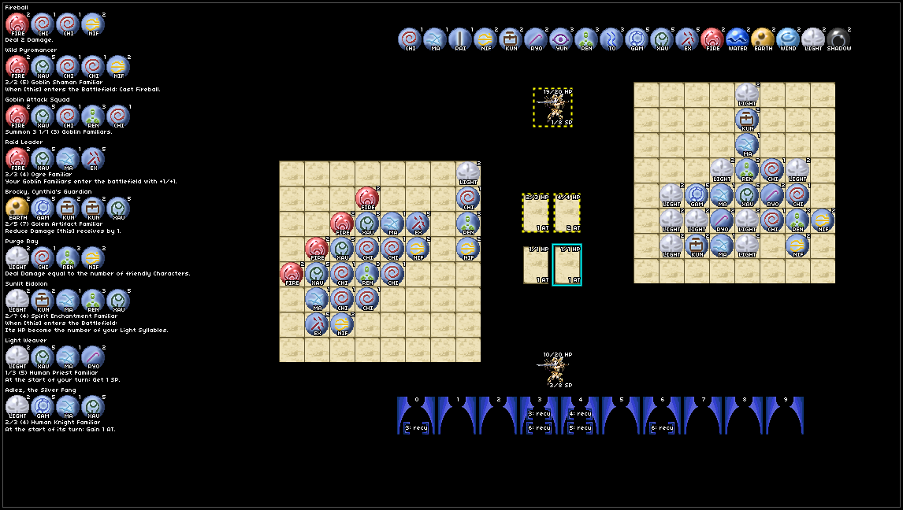

A JavaScript engine for Onsetsu.
Onsetsu is a game strategy game with a strong puzzle aspect for 2 players. Each player represents a powerful mages, able to summon familiars and cast elemental spells.
Start a Game
Visit the game at onsetsu.github.io/onsetsu.engine. For this prototype no lobby server is currently available. So connection is manually set up by the players.
Host
Click 'host game' and your host 'id' will be generated. Transmit this 'id' to your opponent.
Client
Click 'join game'. Replace 'Host ID' with the transmitted id, then click 'join'.
How to Play

In the lower right part of the screen you see the timeline. Each character has to wait a certain amount of time units until it can act. Hovering over an action on the timeline or over a character shows the associated counterpart.
At the start of a mages turn, the mages gets a mana crystal (up to 8). Then the Syllable Points (SP) are set to the number of mana crystals. On their turn mages can use these SP to place syllables on their board by dragging them from the upper right area onto the syllable board. Different syllables consume different amount of SP.
To cast a spell a mage has to place syllable in the correct order on their board. The order of syllables and the effects of spells are depicted in the left side. The syllables have to match read from top to bottom or left to right. If you complete a spell by placing the final syllable, the effect will take off. This can for example summon a familiar or a damage-dealing spell.
Familiars read attack (AT)/health (HP) followed by their delay in parenthesis. Summoning a familiar inserts its action on the timeline at the given delay. On a familiar's turn it can attack an enemy familiar or the enemy mage. In battle of familiars both deal damage to each other.
To end a turn press the 'End Turn' button in the upper area. Once the turn ends, the action of the character is reset on the timeline. For example, mages will be reset at 6 time units.
The player who reduces its opponent's HP to 0 or below wins.